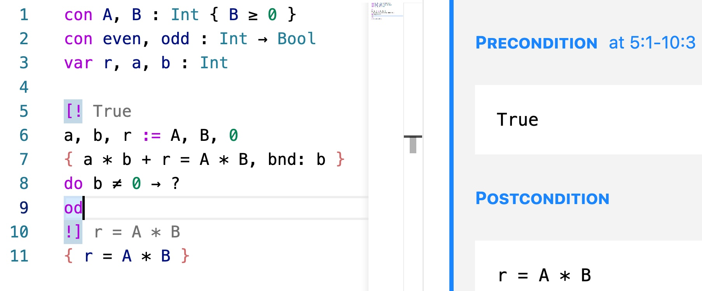
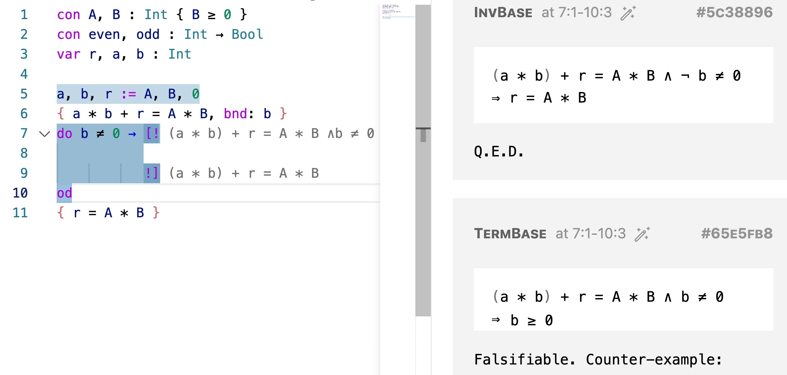

© 2021. All rights reserved.
 Site created with
Hakyll.
Site created with
Hakyll.
Modified theme
lanyon-hakyll
based on
Lanyon.
© 2021. All rights reserved.
 Site created with
Hakyll.
Site created with
Hakyll.
Modified theme
lanyon-hakyll
based on
Lanyon.
Disclaimer This is a quick tutorial on interacting with the Guabao environment. We will give a quick grasp of the program derivation methodology that Guabao supports. However, this is certainly not a sufficient introduction to the methodology itself. For that we refer the readers to materials in the References.
To install Guabao you must have Visual Code Studio. You can install Guabao by searching for the extension “Guabao” in the editor, or through the Extensions Marketplace. A one-click installation downloads the frontend as well as pre-compiled backend.
Once the extension is installed, activate Guabao by creating a new file and saving it with extension .gcl (for Guarded Command Language). Gaubao uses a variation of Guarded Command Language. We will introduce the language as we go in this tutorial. See Language Overview for a more complete summary.
Shown below is an incomplete GCL program which we will use as our running example. We declare two constants A and B, about them all we know is that they are both non-egative (as asserted in { A ≥ 0 ∧ B ≥ 0 } — assertions are enclosed in curly brackets), and constant functions even and odd, which we will use later. Also declared are three variables r, a, and b, all of them having type Int. The goal of the program is to store the value of A * B in variable r, as stated in the postcondition { r = A * B }.
con A, B : Int { A ≥ 0 ∧ B ≥ 0 }
con even, odd : Int -> Bool
var r, a, b : Int
?
{ r = A * B }Copy and paste the code into the editor, save it as a file having extension .gcl, and you should see a screen similar to the screen shot below.

The question mark ? has been extended to a spec — a hole in the program to be filled in. To complete the program we are supposed in fill in a piece of code that brings the state of the system from precondition True to postcondition r = A * B. What we know about global constants (namely A ≥ 0 ∧ B ≥ 0) are universally true, and therefore displayed in a separate pane.
We will attempt to complete the task, but the arithmetic operations we use are limited to addition, subtraction, multiplication and division by 2, and even and odd. This is a common exercise, and was once a useful one for early microcomputers, which did not have an atomic instruction for general multiplication (multiplication by 2 involves only bit-shifting and is much cheaper).
We will need at least a loop for such a non-trivial task, and each loop must have an invariant and a bound. Various techniques were developed to construct candidates of loop invariants from the postcondition. We cannot cover them here and refer the readers to the References page. For this problem,
a * b + r = A * Bis a loop invariant that might work, with bound b.
Copy and paste or type the following code into the spec. To type unicode characters, press ’' and follow the hints in the drop-down menu.
a, b, r := A, B, 0
{ a * b + r = A * B, bnd: b }
do b ≠ 0 ->
?
odIn the code we initialize the variables a, b, r to satisfy the loop invariant. The guard of the loop is b ≠ 0. The body of the loop is yet to be constructed. When the cursor is in the spec, press ctrl-c-r to fill in the spec. You shall see something similar to the screen shot below:

Taking a look at the interface:
The program is in the left pane. The right pane contains information including
A yellow wavy line indicates “there are verification conditions incurred here.” In the screen shoot, the cursor is on line 7, beginning of the loop, and the right pane shows, among other proof obligations,
(a * b) + r = A * B ∧ ¬ b ≠ 0 ⇒ r = A * Bthat is, the invariant and the negation of the guard guarantee the postcondition, and
(a * b) + r = A * B ∧ b ≠ 0 ⇒ b ≥ 0that is, the bound b is non-negative as long as the loop is still running.
Move the cursor to other yellow wavy lines to see other proof obligations.
Each proof obligation comes with a hash key. Press the hash key for the first proof obligation, for example:
A comment block having the key is added to the program file, where you are supposed to fill in a proof of that property. A program is proven correct if all proof obligations are proved. Hash key of a proof obligation with a proof block is displayed in blue (see the top-right corner). Currently the system makes no attempt to check these proofs, however. They are just comments for the user.
Once we start doing the proofs, it immediately turns out that we cannot prove the second obligation — the premise does not guarantee b ≥ 0! We thus realise that we need a stronger invariant. The new invariant would be
a * b + r = A * B ∧ b ≥ 0Update your code accordingly.
Now we attempt to construct the loop body. To have a loop that terminates we have to decrease the bound, and there are various ways to do so. One may decrement b by b := b - 1, or one may divide b by half — knowing that b is not zero. Let us try the second way. Type this into the spec and press ctrl-c-r:
?
b := b / 2That gives you a new spec with updated postcondition: 
We now have to come up with some code that brings the computer from a state satisfying
(a * b) + r = A * B ∧ b ≥ 0 ∧ b ≠ 0to a state satisfying
(a * (b / 2)) + r = A * B ∧ b / 2 ≥ 0One possibility is b := b * 2. However, if we fill in b := b * 2 to the spec:

Among the proof obligations we have to prove:
(a * b) + r = A * B ∧ b ≥ 0 ∧ b = ?bnd_0 ∧ b ≠ 0 ⇒ (b * 2) / 2 < ?bnd_0where ?bnd_0 is a system generated variable. It looks complex but the relevant parts are:
.... b = ?bnd_0 ... ⇒ (b * 2) / 2 < ?bnd_0which is not possible to prove. Therefore b := b * 2 is a bad idea.
Another possibility is a := a * 2. For that we have to prove an proof obligation, which simplifies to
(a * b) + r = A * B .... ⇒
((a * 2) * (b / 2)) + r = A * B ....which is true if b is an even number. This is a hint that we shall wrap a := a * 2; b := b / 2 in a guard even b, to ensure that b is even, and put it in an if construct.
The current code is now:
con A, B : Int { A ≥ 0 ∧ B ≥ 0 }
con even, odd : Int -> Bool
var r, a, b : Int
a, b, r := A, B, 0
{ a * b + r = A * B ∧ b ≥ 0 , bnd: b }
do b ≠ 0 ->
if even b ->
a := a * 2
b := b / 2
fi
od
{ r = A * B }We are not done yet. Among all the proof obligations we will be asked to prove that if is total — every possible case is covered. Therefore we need to think about what to do in the odd b case. For this case we might decrease b by b := b - 1. By a similar process we can construct what to do with a and r in this case to maintain the invariant. A possible final program would be:
con A, B : Int { A ≥ 0 ∧ B ≥ 0 }
con even, odd : Int -> Bool
var r, a, b : Int
a, b, r := A, B, 0
{ a * b + r = A * B ∧ b ≥ 0 , bnd: b }
do b ≠ 0 ->
if even b -> a := a * 2
b := b / 2
| odd b -> r := a + r
b := b - 1
fi
od
{ r = A * B }which computes A * B using O(log B) atomic arithmetic operations.
But that is not the only possible program. One might also decide to do nothing in the odd b case and always decrease b regardless of its parity, resulting in
con A, B : Int { A ≥ 0 ∧ B ≥ 0 }
con even, odd : Int -> Bool
var r, a, b : Int
a, b, r := A, B, 0
{ a * b + r = A * B ∧ b ≥ 0 , bnd: b }
do b ≠ 0 ->
r := a + r
b := b - 1
if even b -> a := a * 2
b := b / 2
| odd b -> skip
fi
od
{ r = A * B }The program is correct as long as one can prove all the proof obligations.
In this example we saw how a program and its proof are developed together. The program certainly determines what needs to be proved. Meanwhile, what needs to be proved also give hints on what the program could be. Code can be motivated by the need to decrease a bound, or to prove a property. Failure of proving a property may indicate that we need to strengthen an assumption, that a previous choice of certain code is wrong, or that the code needs to be put in a guarded command and there are other case to be covered.
It is this style of program development Guabao is designed to support .
ctrl-c-r: when the cursor is in a hole, pressing ctrl-c-r fills in the hole.ctrl-x-r: restarts the Guabao backend.? generates a new hole.\ to input unicode characters used in this language.For more information about the programming language, see Language Overview.